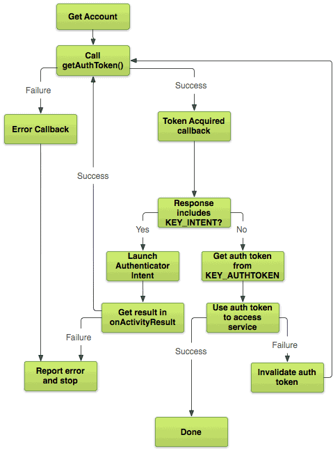

/* Моя кошка замечательно разбирается в программировании. Стоит мне объяснить проблему ей - и все становится ясно. */
John Robbins, Debugging Applications, Microsoft Press, 2000

/* Моя кошка замечательно разбирается в программировании. Стоит мне объяснить проблему ей - и все становится ясно. */
John Robbins, Debugging Applications, Microsoft Press, 2000
Чтобы получить доступ к некоторым онлайн-сервисам, пользователям нужно пройти аутентификацию. Обычно он вводит свой логин и пароль в браузере. Если вы создаёте своё приложение, которое будет подключаться к такому сервису, то не только пользователь должен пройти аутентификацию для доступа к сервису в вашем приложении, но и приложение должно быть авторизовано для выполнения действий от имени пользователя.
На данный момент стандартным протоколом для аутентификация является OAuth2 (Open Authorization). OAuth2 обеспечивает единственное значение, называемое токен авторизации (Auth Token), который представляет как пользователя, так и авторизованное приложения, которое будет действовать от имени пользователя.
Протокол используют Twitter, Google, Flickr, Digg, Yahoo и многие другие сервисы.
Необходимо понимать разницу между терминами аутентификация (authentication) и авторизация (authorization).
Аутентификация - вы посещаете режимное предприятие и показываете своё удостоверение. Охранник смотрит и принимает решение: удостоверение настоящее? печать на месте? фотка совпадает? Опытный охранник может узнать вас в лицо и пропустить и так. Аутентификация может быть простой, а может быть и сложной.

На сайтах обычно аутентификация происходит по схеме логин/пароль, заставляя пользователя вводить данные и проверяя их на сервере.
Авторизация наступает после успешной аутентификации. Даже если вы показали настоящее удостоверение, у вас может быть запрет на посещение отдельных этажей, комнат, серверной и т.д. Или вы не можете пройти в здание по выходным.
Авторизация определяет ограничения на доступные действия. Используя OAuth, мы задаём границы доступа пользователя. Например, пользователь может читать личные сообщения, а босс может просматривать переписку любого сотрудника. Причём, открытая аутентификация означает, что мы сами не занимаемся проверкой логина и пароля, а только получаем готовую информацию. Иными словами, организация заключила договор с охранным предприятием, который и поставляет охранников и занимается системой охраны.
Использование OAuth2 подходит для:
Чтобы начать использовать OAuth2, вы должны знать:
Теперь вы готовы запрашивать токен авторизации. Это многоступенчатый процесс.

Для получения токена авторизации необходимо сначала запросить права на использование ACCOUNT_MANAGER в манифесте. Не забываем про разрешение на интернет.
<uses-permission android:name="android.permission.ACCOUNT_MANAGER" />
<uses-permission android:name="android.permission.INTERNET" />
Имея необходимые полномочия, вы можете вызвать AccountManager.getAuthToken() для получения токена. Большинство методов AccountManager – асинхронные. Вам придётся реализовать её в виде серии обратных вызовов, например:
AccountManager am = AccountManager.get(this);
Bundle options = new Bundle();
am.getAuthToken(
myAccount_, // Account retrieved using getAccountsByType()
"Manage your tasks", // Auth scope
options, // Authenticator-specific options
this, // Your activity
new OnTokenAcquired(), // Callback called when a token is successfully acquired
new Handler(new OnError())); // Callback called if an error occurs
В этом примере класс OnTokenAcquired расширяет AccountManagerCallback. AccountManager вызывает run() в OnTokenAcquired с AccountManagerFuture, содержащим Bundle. Если вызов успешен, то токен будет внутри Bundle.
Вы можете получить токен из Bundle:
private class OnTokenAcquired implements AccountManagerCallback<Bundle> {
@Override
public void run(AccountManagerFuture<Bundle> result) {
// Get the result of the operation from the AccountManagerFuture.
Bundle bundle = result.getResult();
// The token is a named value in the bundle. The name of the value
// is stored in the constant AccountManager.KEY_AUTHTOKEN.
token = bundle.getString(AccountManager.KEY_AUTHTOKEN);
...
}
}
Если все пойдёт хорошо, то Bundle будет содержать допустимый токен в ключе KEY_AUTHTOKEN. Но не всегда все идёт так как запланированно.
Ваш первый запрос токена авторизации может завершиться неудачей по нескольким причинам:
Приложения могут обрабатывать первые два случая, показывая сообщение об ошибке пользователю. Если сеть не работает или пользователь решил не предоставлять доступ, то ваше приложение ничего не может с этим поделать. Последние два случая немного сложнее, потому что хорошо оптимизированные приложения должны обрабатывать эти неудачи автоматически.
Третий случай неудачи, имеющий недостаточные полномочия, передается через Bundle, который вы получаете в вашем AccountManagerCallback (OnTokenAcquired из предыдущего примера). Если Bundle включает Intent в ключе KEY_INTENT, то аутентификатор говорит вам, что ему необходимо прямое взаимодействие с пользователем, прежде чем он может дать вам действительный токен.
У аутентификатора может быть много причин для возврата Intent. Это может быть первый вход пользователя в эту учетную запись. Возможно время учетной записи пользователя истекло и требуется повторный вход в систему или сохраненные полномочия неверны. Может быть аккаунт требует двухфакторной аутентификации либо требуется включение камеры для сканирования сетчатки. В действительности причина не имеет значения. Если вы хотите действительный токен, вы должны обратиться к Intent, чтобы получить его.
private class OnTokenAcquired implements AccountManagerCallback<Bundle> {
@Override
public void run(AccountManagerFuture<Bundle> result) {
...
Intent launch = (Intent) result.get(AccountManager.KEY_INTENT);
if (launch != null) {
startActivityForResult(launch, 0);
return;
}
}
}
Обратите внимание, что пример использует startActivityForResult(), и вы можете перехватить результат Intent в методе onActivityResult() в вашей активности. Если вы не станете перехватывать результат ответа Intent аутентификатора, невозможно будет определить прошёл ли пользователь проверку подлинности или нет. Если результат RESULT_OK, то аутентификатор обновил сохранённые полномочия, чтобы они были достаточны для доступа который вы запросили, далее вы должны вызвать AccountManager.getAuthToken() снова и запросить новый токен аутентификации.
Последний случай, когда токен истёк, на самом деле не ошибка AccountManager. Единственный способ выяснить действительно ли токен истек – это связаться с сервером, что было бы расточительным и дорогим со стороны AccountManager постоянно выходить в интернет и проверять состояние всех своих токенов. Так что эта неудача может быть обнаружено только когда приложение пытается использовать токен аутентификации для доступа к веб сервису.
Пример ниже показывает, как подключиться к серверу Google. Так как Google использует стандарт протокола OAuth2 для проверки подлинности запросов, методы, обсуждаемые здесь широко применимы. Имейте в виду, что каждый сервер отличается. Вам может понадобиться внести небольшие изменения в этот пример для учета вашей конкретной ситуации.
Google API требует предоставления четырех значений с каждым запросом: API key, client ID, client secret, и auth key. Первые три получаются на сайте Google API Console. Последнее значение вы получаете вызвав AccountManager.getAuthToken(). Вы передаете их на сервер Google в качестве части HTTP-запроса.
URL url = new URL("https://www.googleapis.com/tasks/v1/users/@me/lists?key=" + your_api_key);
URLConnection conn = (HttpURLConnection) url.openConnection();
conn.addRequestProperty("client_id", your client id);
conn.addRequestProperty("client_secret", your client secret);
conn.setRequestProperty("Authorization", "OAuth " + token);
Если запрос возвращает HTTP-ошибку 401, то ваш токен был отклонен. Самая распространённая причина этого – истечение токена. Исправить это просто: вызовите AccountManager.invalidateAuthToken() и повторите запрос токена еще раз.
Так как истечение токена является обычным явлением и исправление этой ситуации достаточно легкое, многие приложения просто предполагают истечение токена ещё до того как станет известно об этом. Если обновление токена дешёвая операция для вашего сервера, вы можете вызывать AccountManager.invalidateAuthToken() перед первым вызовом AccountManager.getAuthToken() и избавить себя от необходимость запрашивать токен аутентификации два раза.
В будущем мы рассмотрим практические примеры для OAuth.
На основе статьи Аутентификация через OAuth2 сервисы (Authenticating to OAuth2 Services)